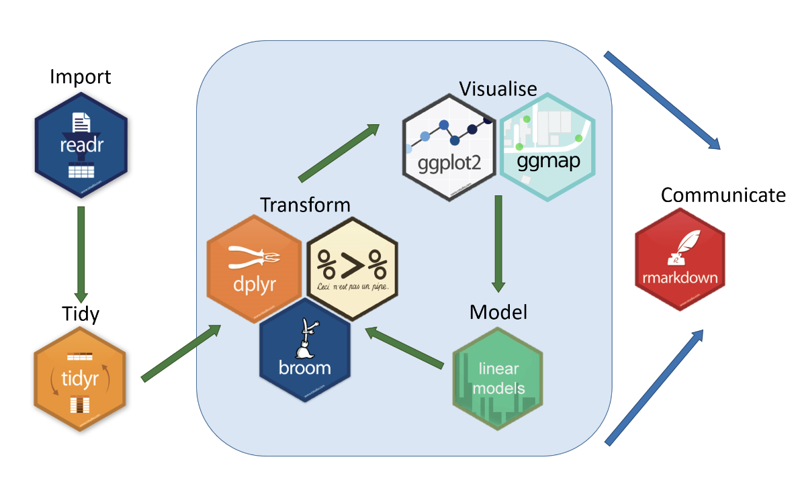
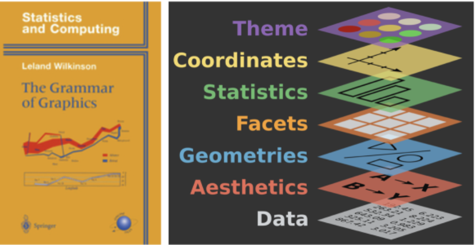

Lecture 1
Let’s use this time to interact & relax before getting started
Please gather in small groups (minimum 3 classmates, maximum 6)
If you don’t know someone please introduce yourself
If your group sees someone without a group, please extend an invitation to join
Dr. Vivian Lew
Math Sciences 8923 (neighbor is Nicolas Christou)
BruinLearn e-mail is the best way to reach me
No discussion or TA or grader for this course
Developing the scaffolding needed for understanding and building on one’s existing data visualization skills.
If you aren’t already in a group, please join one, minimum 3 maximum 6. Please put yourself into a Week 1 group on BruinLearn to get credit for being here tonight.
Someone take a team photo (selfie/grelfie/usie/0.5?) and upload an annotated copy to BruinLearn for credit for attending today.
Let’s take 15-20 minutes to examine and discuss some graphs created by ggplot2.
https://r-charts.com/ggplot2/ or https://r-graph-gallery.com/ggplot2-package.html
Ideally, I would like you to examine either or both of these sites as a team and
Please choose the one plot from your group that you think is most memorable (can be good or not good), and have one team member share the graph on Campuswire and be prepared to tell us why your team chose it.
Understanding and creating visual representations of data
R is one of our tools and
ggplot2 is THE package

gg means “Grammar of Graphics”
The Grammar of Graphics was written by Leland Wilkinson in 1999.
Wilkinson detailed a comprehensive framework to describe and build a wide range of statistical graphics by breaking down the elements of graphics into a unified system.

Points, typically used for individual values
Lines, connect points in some defined order (e.g., time, location)
Bars, typically used for categories (e.g., pizza types)
Polygons, use to represent areas (maps)
Paths, fatter lines, used to represent flows (Sankey)
Conditioning the data
subsets are facets
layers combine multiple types of visualizations into a single graphic
scaling (linear, logarithmic, etc.)
coordinate systems (Cartesian, polar, etc.).
Influence the position of data points and the interpretation.